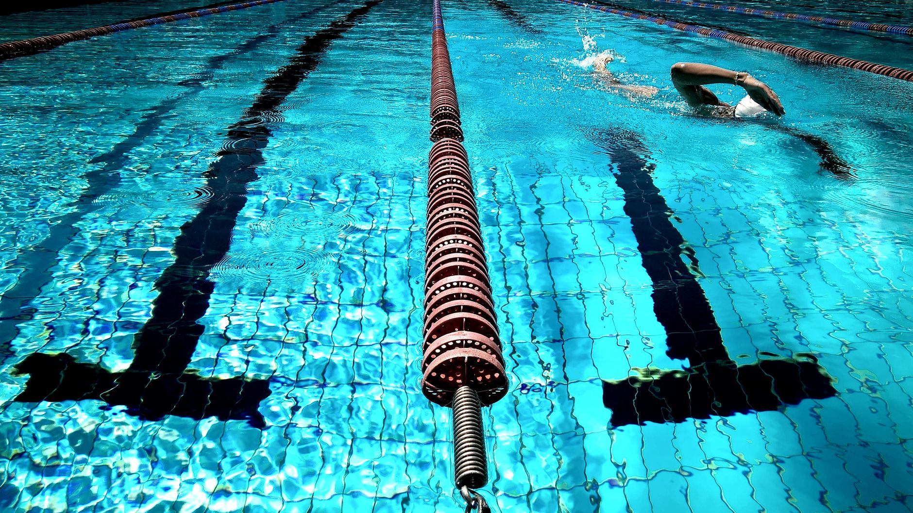

What Young Aquatic Athletes in Tampa Bay Need to Know About the College Recruiting Process
A recent Star Tribune feature asked high school seniors to reflect on their college recruiting journeys — and their answers were eye-opening. Whether they landed Division I scholarships or found the perfect fit at a smaller program, one message came through clearly: start earlier than you think you need to, and be more proactive than you feel comfortable being. For young athletes in Wesley Chapel, Land O' Lakes, and across the Tampa Bay area who are swimming competitively or playing water polo, that advice is worth taking seriously right now.
Recruiting Starts Before Your Junior Year
Many high school seniors surveyed expressed the same regret — they wished they had started reaching out to college coaches sooner. In aquatic sports, this is especially true. College coaches who recruit swimmers and water polo players are often building their rosters well in advance, and they are attending club meets and tournaments throughout the year to scout emerging talent.
If your young athlete is in middle school or entering their freshman year of high school, this is the right time to begin thinking about long-term goals. Building a strong club resume, logging competitive times, and developing solid water polo skills now will make a meaningful difference when coaches begin evaluating prospects later.
Your Highlight Video and Athletic Profile Matter
College coaches are busy, and their initial impression of a prospective recruit often comes from a short video or an online athletic profile. Young athletes should invest time in creating a clear, well-edited highlight video that showcases their strongest swims or water polo plays. Keep it concise — most coaches prefer videos between two and four minutes — and lead with your best moments.
Your athletic profile should include:
- Personal best times for each competitive stroke or event (for swimmers)
- Game footage highlighting defensive and offensive skills (for water polo players)
- Academic GPA and standardized test scores
- Contact information and graduation year
- Club team name, coach contact, and upcoming tournament schedule
Reach Out — Don't Wait to Be Discovered
One of the most consistent pieces of advice from seniors in the Star Tribune feature was simple: send the email. Many young athletes hesitate to contact college coaches directly because it feels presumptuous, but coaches expect and welcome it. A short, professional introductory email that expresses genuine interest in a program, highlights your athletic achievements, and invites the coach to watch you compete can open doors that passive waiting never will.
At Nexar Aquatic Academy, we encourage our swimmers and water polo players to approach recruiting with the same discipline they bring to practice. Consistency, preparation, and a willingness to put yourself forward are skills that serve athletes both in and out of the water.
Find the Right Fit, Not Just the Biggest Name
The seniors surveyed also emphasized something that parents in particular should hear: the best college program is not always the most recognizable one. A school where a young athlete will train well, thrive academically, and feel supported by coaching staff is worth far more than a prestigious name that does not align with their goals or abilities.
Florida has a strong network of college aquatic programs at all levels — Division I, Division II, Division III, and NAIA — and young athletes in the Tampa Bay region have access to excellent club training and competitive opportunities that can make them attractive recruits across that full spectrum.
Start the Conversation Now
Whether your child is a competitive swimmer logging fast times at local meets or a water polo player developing their skills through club play, the recruiting journey is one that rewards early action and consistent effort. Encourage your young athlete to set goals, track their progress, and begin researching programs that excite them.
At Nexar Aquatic Academy, we are proud to support young athletes in Wesley Chapel and Land O' Lakes as they grow into the competitors and leaders they are capable of becoming — both in the pool and beyond it.
Ready to get in the water?
First practice is completely FREE — no commitment needed.